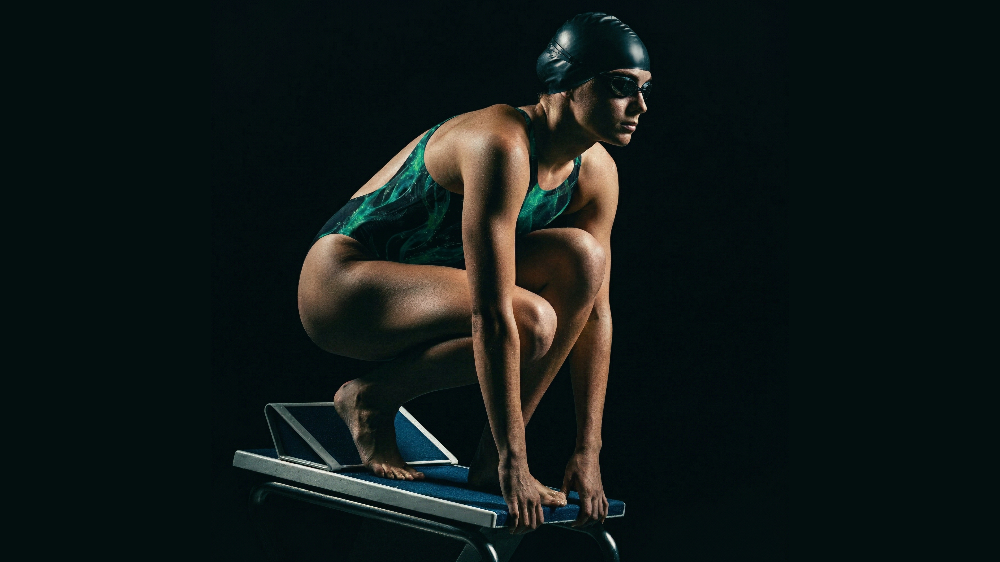
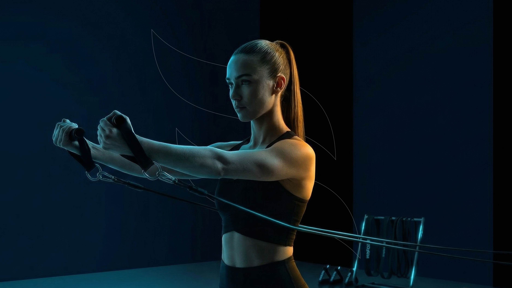

Cases selecionados
/02Uma seleção criteriosa de projetos que refletem nosso compromisso com a simplicidade e o design estratégico.
Ver todos os projetos


Inspire Seguros
Estratégia, Identidade Visual, Webdesign